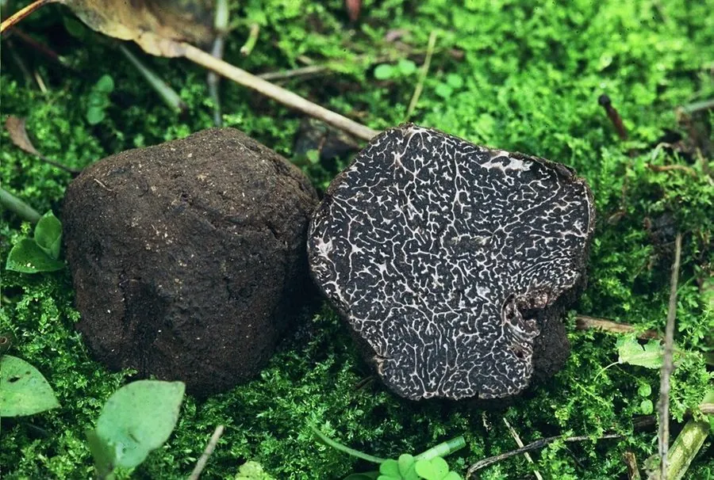

真菌 · 真菌界
黑松露 Tuber melanosporum

生长在土中、与橡树共生的黑色块菌，香气浓郁独特，是西餐中的顶级食材，被称为“厨房里的黑钻石”。
- 分类
- 门子囊菌门纲盘菌纲目盘菌目科块菌科属块菌属
- 栖息环境
- 石灰岩土壤的橡树、榛树林地，子实体生于地下 5–20 cm 深处
- 地理分布
- 欧洲的法国、意大利、西班牙，中国云南、四川等地有近缘种分布
- 保护级别
- 暂无评估（IUCN 未评估，野生资源受过度采集影响）
物种志
黑松露是子囊菌门盘菌目的外生菌根真菌，子实体生于地下，呈不规则的块状或球形，直径 3–8 cm，表面黑色并布满多边形的疣突；内部产孢组织呈黑褐色，密布白色的迷宫状纹路；成熟后香气浓郁，带有泥土、坚果和麝香的气味。它没有菌盖和菌柄，靠地下子实体的气味吸引动物取食并传播孢子。
黑松露与橡树、榛树、松树等树木形成外生菌根，生于石灰岩土壤的林地中，在欧洲的法国、意大利、西班牙和中国云南、四川等地都有分布。它深埋土中，采集者常靠训练过的狗或母猪闻香寻找。黑松露香气浓郁独特，是西餐中的顶级食材，价格昂贵，被称为“厨房里的黑钻石”。由于过度采集和栖息地减少，野生黑松露资源下降，人工种植需要多年才能产菌。
形态与习性
- 子实体不规则块状，生于地下，直径 3–8 cm
- 表面黑色，布满多边形疣突
- 内部黑褐色，密布白色迷宫状纹路
- 香气泥土、坚果和麝香的复合气味
- 共生与橡树、榛树等形成外生菌根
- 采收期冬季至翌年春季，靠犬只寻香采集
- 经济价值西餐顶级食材，价格昂贵
趣味知识
- 黑松露生长在地下，采集者常靠训练过的狗或母猪闻香寻找。
- 它的香气独特，带有泥土、坚果和麝香的气味。
- 黑松露与橡树等树木形成外生菌根，无法独立生活。
- 因为价格昂贵，它被称为“厨房里的黑钻石”。